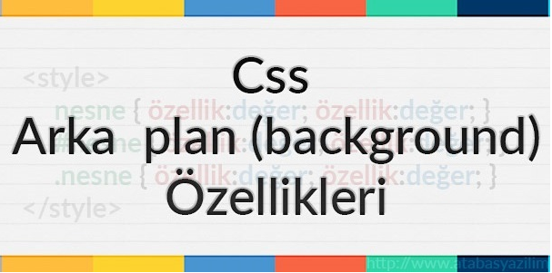

CSS ARKAPLANLAR
Bu sayfada HTML sayfanızın ya da sayfanızda bir bölümün arkaplan rengini, resmini ve özelliklerini
nasıl belirleyeceğiniz ile ilgili bilgiler bulunmaktadır.
background-color: Arkaplan Rengi
Bir elementin arkaplan rengini belirlememizi sağlar.
div { background-color: #EFEFEF; }
background-image: Arkaplan Resmi
Bir element içinde arkaplan resmi kullanmamızı sağlar.
body { background-image: url('resim.jpg'); }
Yukarıdaki gibi url('') yazılarak arasında resmin adı veya yolu yazılır. Örnekte resmin adı resim.jpg olarak gösterilmiştir.
background-attachment: Arkaplan Sabitliği
Bu kod kullandığımız arkaplanın sabit kalıp kalmayacağı hakkında ayar yapmamızı sağlar. Eğer özellik değerinin sabit kalmasını (yani sayfanın yerine göre değişmemesini)
istiyorsak fixed özelliği kullanırız.
body {
background-image: url('resim.jpg');
background-attachment: fixed;}
background-position: Resmin Nereye Hizalanacağı
Eğer background-repeat özelliğini no-repeat olarak belirlediysek bu kod yardımıyla onun hizalanma şeklini belirleme şansına sahip oluruz.
body {
background-image: url('resim.jpg');
background-repeat: no-repeat;
background-position: right top; }
Yukarıda yer alan kod arkaplan resminin right (sağ) ve top (üst) tarafa doğru hizalanacağını bildirir.